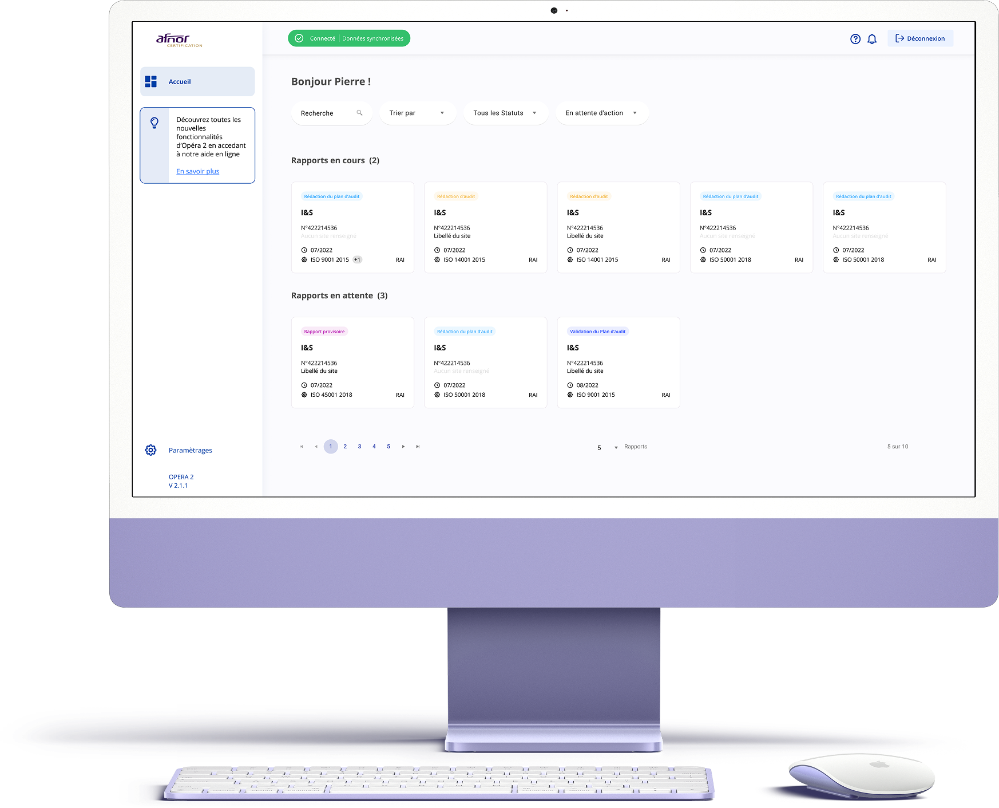
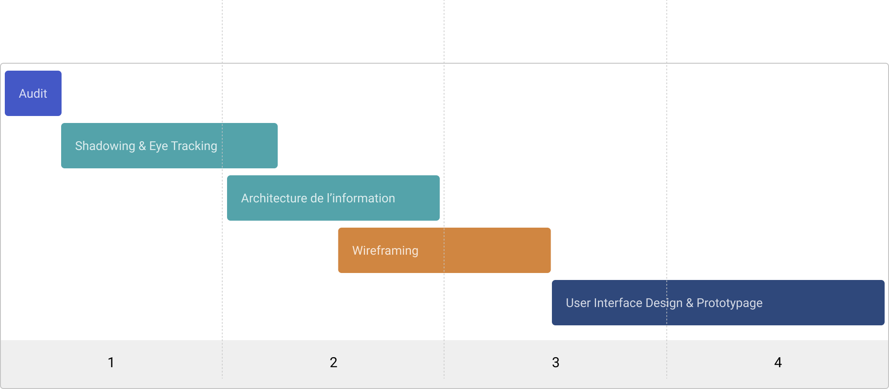
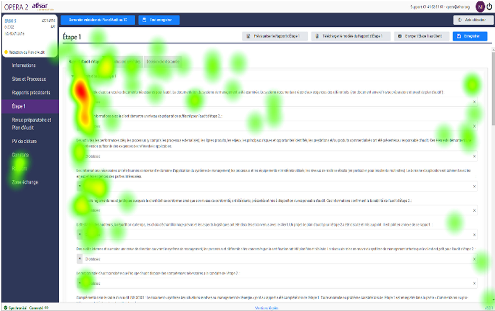
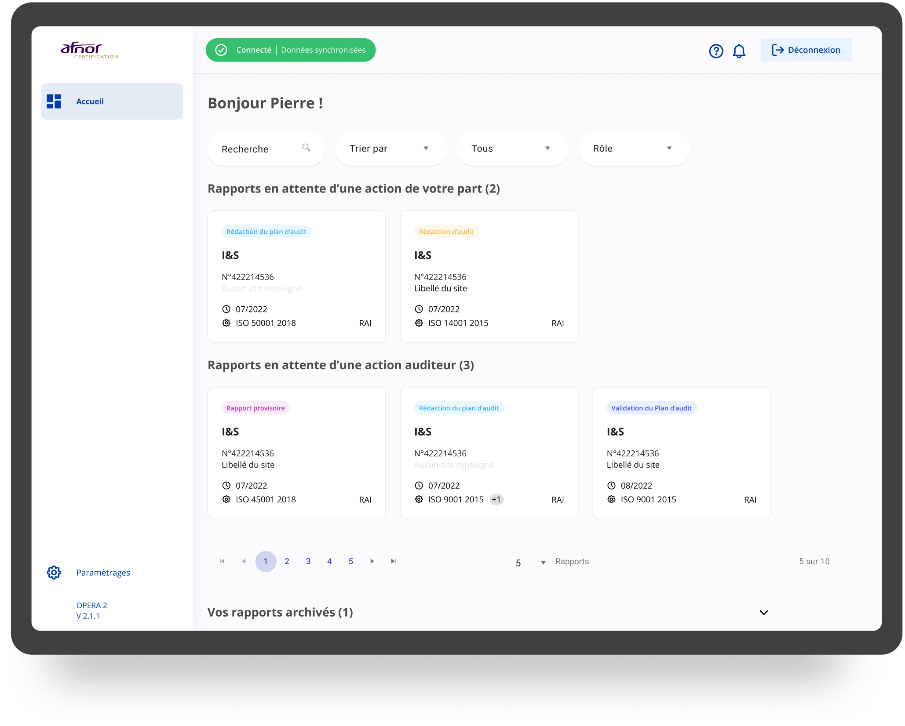
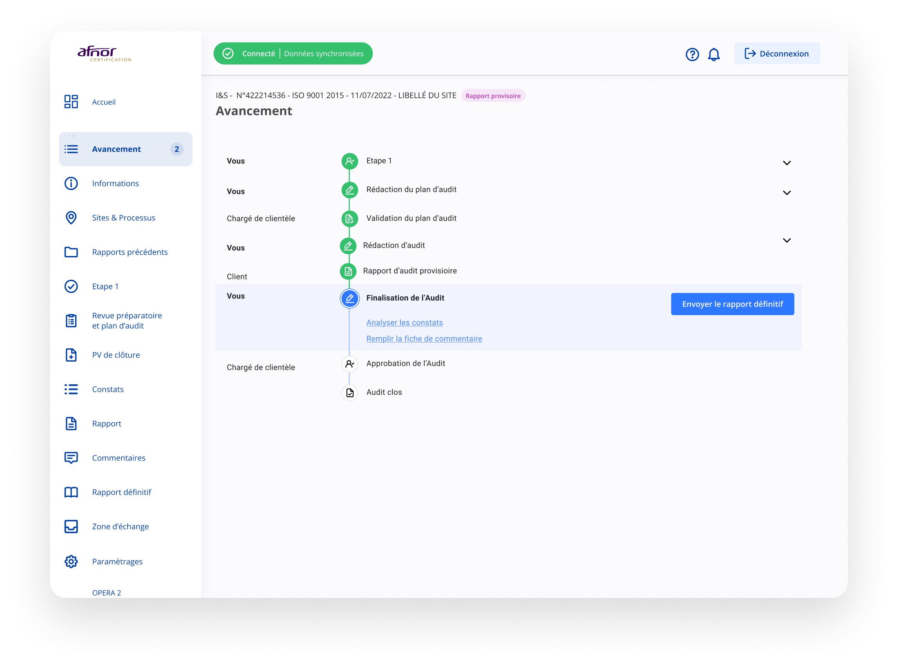
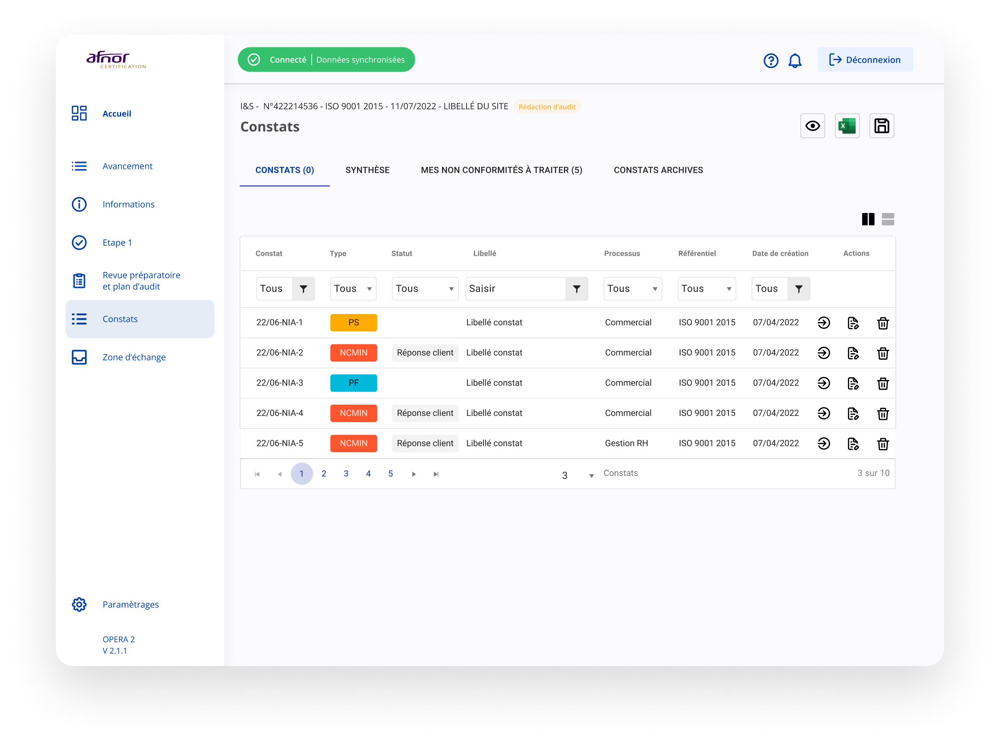
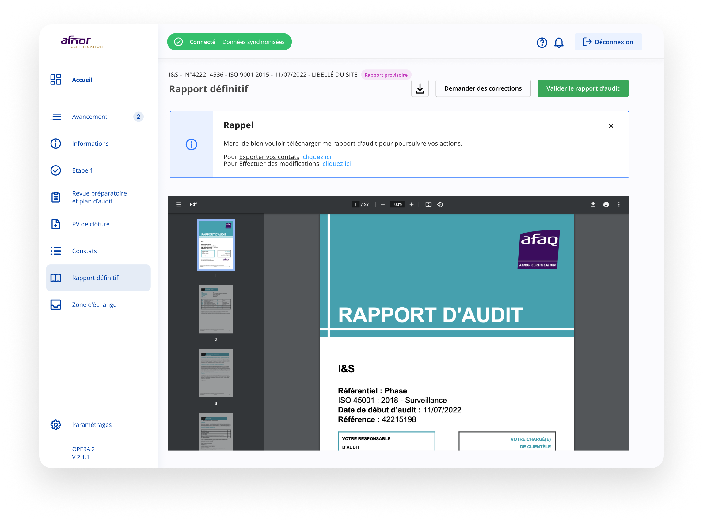

Une plateforme unique, des audits transparents
Avec plus de 3500 audits, Opéra 2 permet aux clients de suivre chacune des étapes des audits tout en simplifiant les échanges au sein de la plateforme avec les auditeurs.

La mission
Lancé par Afnor en 2016, OPERA est une plateforme SaaS de suivi d'audit. Destinée aux clients souhaitant être audités, elle facilite le processus, de la préparation à la prise de décision, tout en permettant aux clients de collaborer avec leur auditeur et leur chargé de clientèle sur une plateforme commune. Initialement plus orienté sur une refonte graphique et donc UI Design, j’ai accompagné mes clients sur une refonte plus profonde de l’UX de la plateforme.
Audit UX & refonte ergonomique complète
Simplifier les processus de suivi et la saisie
Création d’un design system
Renouer avec les utilisateurs
Mon rôle
En tant que Product Designer, j'ai accompagné Afnor dans la refonte ergonomique globale de la solution, en intégrant une phase d'amélioration de l'expérience utilisateur jusqu'à la conception d'un design system complet. Pour ce projet j’ai eu l’opportunité de travailler avec l’équipe interne Afnor responsable du projet Opéra composée de Marie Sperandio Responsable de la transformation numérique, Ilija Spaargaren Chef de projet, Frédéric Dorinet Product Owner, Williams Bouton CSM. Pour le développement, l’agence Anakeen a été représentée par Moez Marrakchi Ingénieur en développement, Lydie Derrien Directrice projets et Santiago Mauro Développeur Fullstack.
Tâches principales
- Interview et Scope
- Recherche et idéation
- Exécution du design et validation
- Création, intégration et passation du Design system
Design & Research Tool kit
Planning
Le projet s’est déroulé en 4 grandes phases : audit, shadowing & eye tracking, architecture de l’information & wireframing, finalisation des interfaces & prototype.

Deck de recherche
Shadowing
Le shadowing est une des méthodes d’observation que j’ai mises en place au début de la phase de recherche. Cette méthode m’a permis d’observer le comportement et les interactions d’un panel d’utilisateurs avec le produit existant.
Lors de l’atelier nous avons sollicité individuellement 10 utilisateurs et leur avons demandé d’effectuer des tâches habituelles sur la plateforme Opéra 2. On s’est positionné derrière eux, en évitant de trop perturber leur environnement afin de les observer manipuler le service. Durée 40-50 minutes. Enfin nous avons finalisé l’atelier par une grille d’évaluation ergonomique.
Eye Tracking
L’oculométrie (eye tracking) est une technologie qui mesure les mouvements oculaires. Cette technique nous permet de comprendre en détail le parcours oculaire des utilisateurs face à une interface afin de mieux comprendre ce qui retient le plus leur intérêt. L’eye tracking est actuellement considéré comme étant une méthode de recherche UX très précise. Dispositif : utilisation de la solution Tobii Pro Nano.
Lors de l’atelier nous avons sollicité individuellement 8 utilisateurs et leur avons demandé d’effectuer des tâches habituelles sur la plateforme Opéra 2. La caméra a permis de suivre, d’enregistrer et d’analyser les mouvements des yeux des utilisateurs lors de leur manipulation sur le service.

La solution
La refonte
La refonte ergonomique a engendré une harmonisation et une uniformisation des comportements suivants : la création de systèmes et de patterns en fonction de la typologie de la page, qu'il s'agisse de formulaires, de tableaux, de tableaux de bord, etc. L'amélioration de l'assistance à la saisie. La simplification des tâches à accomplir grâce à des to do goals (notifications). Une révision de la navigation pour la rendre plus lisible, claire et fluide, en combinant la sidebar et la barre d'onglets. Une amélioration de la lisibilité générale, accompagnée d'info-bulles lorsque nécessaire. Une réduction de la complexité des interfaces pour alléger la charge mentale des utilisateurs. Une amélioration des performances globales, notamment en réduisant les temps de réponse. Un wording plus clair et plus compréhensible pour l'utilisateur.
User interface — Dashboard
Le nouveau tableau de bord permet aux utilisateurs de visualiser en un coup d’œil les rapports en attente d’une action, les rapports en attente d’une action auditeur et les rapports archivés.

Liste des audits & avancement
La navigation combinant sidebar et barre d’onglets permet de suivre chaque étape de l’audit : revue préparatoire et plan d’audit, constats, rapport, commentaires, rapport définitif et zone d’échange.

Détail d’un constat
Chaque constat (NC mineure, hors champ, etc.) dispose d’une fiche détaillée regroupant les sites repris, les réponses et propositions d’actions.

Rapport définitif
Le workflow de validation permet de demander des corrections ou de valider le rapport d’audit, de soumettre au RA et d’envoyer le rapport définitif.

Prototype
Retrouvez le prototype sur Figma. Pour des raisons de confidentialité le prototype n’est pas accessible pour le moment.
Les impacts
La refonte ergonomique a permis :